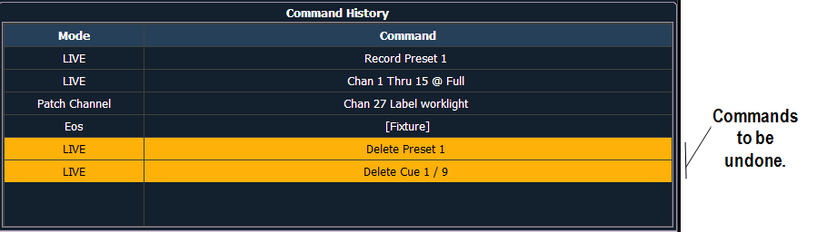

Undo is a method to reverse or “undo” certain operations performed in the software. You can use [Undo] to reverse any command that results in a change to data that would be saved to the show file or any command that changes manual levels in Live.
If there are any commands in the command line, pressing [Undo] once clears the command line. Once the command line is empty, pressing [Undo] will start the undo process.
When [Undo] is pressed from an empty command line, the command history display will open in the CIA and the most recent completed command is highlighted in gold. If you press [Enter], you will undo your last command. [Shift] & [Clear] can be used to clear the command line as well.

You may use the page arrow keys or a mouse to select multiple commands. When [Enter] is pressed, an advisory is posted. When [Enter] is pressed again, all highlighted commands will be undone and subsequently removed from the command history. When removing more than one command, a confirmation is required.
After an Undo has been performed, a {Redo} button will appear in the command history. You may press this button followed by [Enter] and the last undo will be “redone” to reinstate the removed commands
In a multiple user environment, each user is only able to undo the changes that they made. In the undo command history, the user will only see the commands that they used.
Note: Not all commands can be undone including playback actions and manual attributes placed on channels or encoder actions.